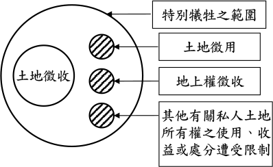
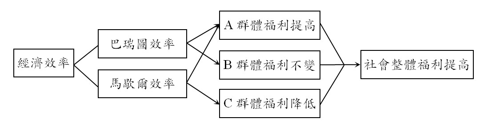
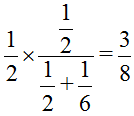
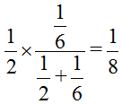
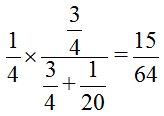

主題精選：土地徵收¶
共收錄 21 篇文章。
1. 一般徵收與區段徵收¶
發布日期: 2025-12-11
內文¶
土地徵收大致分為一般徵收與區段徵收二種。簡言之，區段徵收以外之土地徵收，皆屬一般徵收。
• (一) 一般徵收：政府對個別或小範圍之土地予以徵收，稱為一般徵收。一般徵收僅得採現金補償，不得採抵價地補償。
• (二) 區段徵收：政府對全區或大範圍之土地予以徵收，稱為區段徵收。區段徵收採現金補償與抵價地補償並行，並以抵價地補償為其特色。
• (三) 兩者在適用上之比較：
• T. ABLE_PLACEHOLDER_1
注：本文圖片存放於 ./images/ 目錄下
2. 政府機關及國營事業以撥用或徵收方式取得公有土地或私有土地之比較¶
發布日期: 2025-12-04
內文¶
• (一) 取得方式不同：
-
政府機關及國營事業得以「撥用」方式取得公有土地，但不得以「徵收」方式取得公有土地。
-
政府機關及國營事業得以「徵收」方式取得私有土地，但不得以「撥用」方式取得私有土地。
• (二) 國營事業不同：
-
僅限於非公司組織之國營事業（亦即僅限於政府機關組織之國營事業），始得以撥用方式取得公有土地。
-
僅限於政府資本超過50%之國營事業（亦即得為公司組織之國營事業，但政府股份須超過50%），始得以徵收方式取得私有土地
• (三) 取得權利不同：
-
政府機關及國營事業以「有償撥用」取得公有土地之所有權，以「無償撥用」取得公有土地之使用權。
-
政府機關及國營事業以「土地徵收」取得私有土地之所有權，以「土地徵用」取得私有土地之使用權。
• (四) 取償價格不同：
-
政府機關及國營事業如以有償撥用取得公有土地，其取償價格以「公告土地現值」為準（撥劃§III）；如以無償撥用取得公有土地，則無取償價格。
-
政府機關及國營事業如以土地徵收取得私有土地，其取償價格以「市價」為準（徵§30I II）；如以土地徵用取得私有土地，其每年取償價格以「公告土地現值百分之十」為準（徵§58V）。
注：本文圖片存放於 ./images/ 目錄下
3. 關於土地及其改良物方面之特別犧牲¶
發布日期: 2025-11-27
內文¶
國家機關依法行使公權力致人民之財產遭受損失，若逾其社會責任所應忍受之範圍，形成個人之特別犧牲者，國家應給予合理補償（司法院釋字第440號解釋）。準此，凡屬個人之一般犧牲者，國家不給予補償；凡屬個人之特別犧牲者，國家始給予補償。
關於土地及其改良物方面之特別犧牲包括下列二種：
• (一) 私人土地或其改良物所有權被剝奪：此即「土地徵收」之意涵。特別犧牲以土地徵收為主，但不限於土地徵收。
• (二) 私人土地或其改良物所有權之使用、收益或處分遭受限制：憲法上財產權保障之範圍，不限於人民對財產之所有權遭國家剝奪之情形。國家雖未剝奪人民之土地所有權，但限制其使用、收益或處分，已逾其社會責任所應忍受之範圍，形成個人之特別犧牲者，國家亦應予土地所有人相當之補償，始符合憲法保障人民財產權之意旨（司法院釋字第813號解釋理由書）。茲舉四例說明；
-
土地徵用：國家因興辦臨時性公共建設工程，得徵用私有土地或土地改良物（徵§58Ⅰ）。所稱徵用，指國家強制使用私人土地或其改良物，用畢即歸還所有權人。因此，土地徵用乃徵用「使用權」，而非徵收「所有權」。
-
地上權徵收：需用土地人因興辦土地徵收條例第3條規定之事業，需穿越私有土地之上空或地下，得就需用之空間範圍協議取得地上權，協議不成時，準用徵收規定取得地上權（徵§57Ⅰ）。又，需用土地人不依徵收規定向主管機關申請徵收地上權者，土地所有權人得請求需用土地人向主管機關申請徵收地上權（司法院釋字第747號解釋）。因此，地上權徵收乃徵收「地上權」，而非徵收「所有權」。
-
既成道路或都市計畫道路埋設地下設施物：主管機關對於既成道路或都市計畫道路用地，在依法徵收或價購以前埋設地下設施物妨礙土地權利人對其權利之行使，致生損失，形成其個人特別之犧牲，自應享有受相當補償之權利（司法院釋字第440號解釋）。
-
歷史建築所定著之土地：土地所有人如因定著於其土地上之建造物及附屬設施，被登錄為歷史建築，致其就該土地原得行使之使用、收益、處分等權能受到限制，究其性質，屬國家依法行使公權力，致人民財產權遭受逾越其社會責任所應忍受範圍之損失，而形成個人之特別犧牲，國家應予相當補償（司法院釋字第813號解釋）。
總之，特別犧牲之範圍不限於土地或其改良物之所有權被剝奪（即土地徵收）。土地或其改良物所有權之使用、收益或處分遭受限制，逾其社會責任所應忍受之範圍，亦屬於特別犧牲之範圍，國家應給予合理補償。如圖所示。
[圖片1]
【註】 徵：土地徵收條例
文章圖片¶

注：本文圖片存放於 ./images/ 目錄下
4. 四則免徵土地增值稅之理由¶
發布日期: 2025-05-08
內文¶
• (一) 土地徵收免徵土地增值稅之理由：
-
若土地徵收課徵土地增值稅，土地所有人就無法以其補償餘額，再去購買同一地段、同一品質及同一面積之土地。
-
土地徵收與買賣不同。前者乃強制取得，後者乃合意取得。亦即，土地徵收是土地所有人在不得已、不情願情況下，被迫喪失土地，故給予免徵土地增值稅之租稅優惠。
-
現行土地徵收以市價補償，僅填補被徵收人之財產損失，未填補其非財產損失。基於土地徵收稟賦效果，應給予免徵土地增值稅之租稅優惠。
• (二) 公共設施保留地被徵收免徵土地增值稅之理由（司法院釋字第779號解釋理由書）：
-
土地倘經指定為公共設施保留地，其財產價值即大減，嚴重影響土地所有人之權益。
-
公共設施保留地之土地流動性、市場交易機會及價值，因政府政策及法令而受不利影響。
-
因政府財政困難，土地經指定為公共設施保留地後，至被徵收之期間常延宕多年，其土地流動性受限。
• (三) 公共設施保留地尚未被徵收前之移轉免徵土地增值稅之理由（司法院釋字第779號解釋理由書）：
-
於政府徵收前土地並無市場增值，以致影響市場交易機會及價值，若交易時仍規定須繳納土地增值稅，有違最後於徵收土地時免繳之原意。
-
公共設施保留地交易時，通常依公告現值徵收土地增值稅，而公告現值繫諸政府政策，未必反映市場價值，如據以徵收土地增值稅，既不合理，且不符社會公平正義原則。
-
就同一公共設施保留地，徵收時之土地所有人無須繳納土地增值稅，而徵收前交易之土地所有人卻須繳納土地增值稅，亦有失公平。
• (四) 供公共設施使用之非都市土地尚未被徵收前之移轉免徵土地增值稅之理由（司法院釋字第779號解釋理由書）：
-
非都市土地如經編定為交通用地，且依法核定為公共設施用地者，其使用受限制，流動性、市場交易機會及價值，因政府之政策及法令而受不利影響之情形，與依都市計畫法指定之公共設施保留地受不利影響者相當。
-
非都市土地若實際已成為公路，亦即供作公共設施使用，其流動性、市場交易機會及價值所受不利影響更加嚴重。
-
此類非都市土地，性質與依都市計畫法指定之公共設施保留地相似，在土地增值稅之徵免上，理應等同處理，俾符合租稅公平原則及憲法第7條保障平等權之意旨。
注：本文圖片存放於 ./images/ 目錄下
5. 土地徵收補償市價之查估標準¶
發布日期: 2024-09-19
內文¶
土地徵收條例第30條第1項規定：「被徵收之土地，應按照徵收當期之市價補償其地價。在都市計畫區內之公共設施保留地，應按毗鄰非公共設施保留地之平均市價補償其地價。」析言之：
• (一) 非公共設施保留地：以被徵收土地本身之市價，補償其地價。所稱市價，指由直轄市、縣（市）主管機關查估或委由不動產估價師查估，並提交地價評議委員會評定之市場正常交易價格（徵查§2①）。
• (二) 公共設施保留地：以被徵收土地之毗鄰非公共設施保留地之平均市價，補償其地價。其中，「毗鄰」之界定影響公共設施保留地土地所有權人之權益甚鉅。茲分下列二說：
-
地理接觸說：毗鄰，僅限於被徵收土地之接連土地，亦即毗連土地。然，當接連之非公共設施保留地市價偏低時，恐影響土地所有權人之權益。現行一般徵收採地理接觸說，即公共設施保留地市價，以毗鄰非公共設施保留地之市價平均計算。所稱平均計算，指按毗鄰各非公共設施保留地之區段線比例加權平均計算（徵查§22III）。
-
受益範圍說：毗鄰，指公共設施設置所影響之受益範圍。現行區段徵收採受益範圍說，即區段徵收範圍內之公共設施保留地市價，以同屬區段徵收範圍內之非公共設施保留地市價平均計算（徵查§22VI）。
以上二說，以受益範圍說較合理。
【附註】 徵查：土地徵收補償市價查估辧法
注：本文圖片存放於 ./images/ 目錄下
6. 發給補償完竣¶
發布日期: 2024-09-05
內文¶
• (一) 發給補償完竣之態樣：
-
現金補償： (1)應受補償人受領：需用土地人將補償費繳交該管直轄市或縣（市）主管機關發給應受補償人完竣，是為發給補償完竣。 (2) 應受補償人受領遲延、拒絕受領或不能受領：直轄市或縣（市）主管機關應發給補償費之期限屆滿次日起三個月內存入土地徵收補償費保管專戶保管。依規定繳存專戶保管時，視同發給補償完竣（徵§26III）。
-
抵價地補償：實施區段徵收，原土地所有權人申請發給抵價地者，於直轄市或縣（市）主管機關核定發給抵價地通知時，視同發給補償完竣。
綜上，所謂「發給補償完竣」，包括應受補償人受領現金完竣、補償費存入專戶保管完畢及核定發給抵價地通知完成等三種態樣。
• (二) 發給補償完竣之效力：
-
發生物權變動效果：土地徵收採登記處分要件主義（民§759），於發給補償完竣即發生物權變動效果。換言之，自發給補償完竣之日起，需用土地人取得被徵收土地之所有權，原地主喪失被徵收土地之所有權。
-
所有負擔消滅：土地徵收屬於原始取得，因此發給補償完竣，原所有權絕對消滅。存在於原所有權上之一切負擔（如他項權利、限制登記、三七五租佃、租賃權等）隨之消滅。
-
地上物限期遷移完成：被徵收土地或土地改良物應受之補償費發給完竣或核定發給抵價地後，直轄市或縣（市）主管機關應通知土地權利人或使用人限期遷移完竣（徵§28I）。
-
進入被徵收土地內工作：需用土地人應俟補償費發給完竣或核定發給抵價地後，始得進入被徵收土地內工作。但國防、交通及水利事業，因公共安全急需先行使用者，不在此限（徵§27）。
【附註】 ①民：民法。 ②徵：土地徵收條例。
注：本文圖片存放於 ./images/ 目錄下
7. 徵收免稅及重購退稅之用意¶
發布日期: 2024-03-28
內文¶
• (一) 立法目的：
土地（房屋）徵收或土地（房屋）出售時，如扣除稅費，將無法以其餘額購買同一地段、同一品質及同一面積之土地（房屋），因此給予免除或退還稅費。
• (二) 相關規定：
-
土地徵收，免徵土地增值税（土地稅法第39條第1項）。
-
房地徵收，免徵房地合一所得稅（所得稅法第4條之5第1項第3款）。
-
自用住宅用地、自營工廠用地或自耕農業用地出售後，重購退還土地增值稅（土地稅法第35條）。
-
自住房地出售後，重購退還房地合一所稅（所得稅法第14條之8）。
-
建築改良物之徵收，其補償費按重建價格估定，不扣除折舊費用（土地徵收例第31條第1項）。
注：本文圖片存放於 ./images/ 目錄下
8. 巴瑞圖經濟效率與馬歇爾經濟效率¶
發布日期: 2023-03-30
內文¶
• (一) 巴瑞圖經濟效率
一項政策之實施，某些人福利增加，另一些人福利不變，稱為巴瑞圖經濟效率（Pareto Efficiency）。
• (二) 馬歇爾經濟效率
一項政策之實施，某些人福利增加，另一些人福利減少，但總受益大於總受損，淨效益大於零，稱為馬歇爾經濟效率（Marshall Efficiency）。
• (三) 兩者關係
-
一項政策之實施，如果符合巴瑞圖經濟效率之要求，必定符合馬歇爾經濟效率之要求。相反地，一項政策之實施，如果符合馬歇爾經濟效率之要求，不一定符合巴瑞圖經濟效率之要求。換言之，巴瑞圖經濟效率涵蓋馬歇爾經濟效率。
-
政府推行一項政策，當以符合巴瑞圖經濟效率為最佳。無法符合巴瑞圖經濟效率，始退而求其次，至少須符合馬歇爾經濟效率。如果連馬歇爾經濟效率都無法符合，則該項政策不值得採行。
• (四) 舉例
-
市地重劃與土地徵收之比較：政府取得公共設施用地（如道路、公園、學校等）可採用市地重劃或土地徵收。市地重劃基於使用者付費及受益者負擔精神，符合馬歇爾經濟效率，亦符合巴瑞圖經濟效率。土地徵收以市價補償，雖造成社會大多數人福利增加，但造成被徵收地主福利減少，不符合巴瑞圖經濟效率，但符合馬歇爾經濟效率。
-
協議價購與土地徵收之比較：政府取得建設用地可採協議價購或土地徵收。協議價購採雙方合意，符合馬歇爾經濟效率，亦符合巴瑞圖經濟效率。土地徵收以市價補償，雖造成社會大多數人福利增加，但造成被徵收地主福利減少，不符合巴瑞圖經濟效率，但符合馬歇爾經濟效率。
-
土地徵收市價補償與高於市價補償之比較：政府取得公共事業用地可採市價補償或高於市價補償。如採市價補償，基於土地徵收稟賦效果（endowment effect）（指損失土地的痛苦遠大於獲得土地的快樂），造成被徵收地主福利減少，不符合巴瑞圖經濟效率，但符合馬歇爾經濟效率。但如採高於市價補償，使原地主於徵收前與徵收後之福利水準不變，則符合馬歇爾經濟效率，亦符合巴瑞圖經濟效率。
• (五) 結論
-
巴瑞圖經濟效率優於馬歇爾經濟效率。因此，政府施政應追求巴瑞圖經濟效率；無法達成巴瑞圖經濟效率時，始追求馬歇爾經濟效率。
-
政府採市地重劃取得公共設施用地，可以符合巴瑞圖經濟效率。但如採市價徵收取得公共設施用地，僅能符合馬歇爾經濟效率，無法符合巴瑞圖經濟效率。
-
政府如採協議價購取得建設土地，可以符合巴瑞圖經濟效率。但如採市價徵收取得建設土地，僅能符合馬歇爾經濟效率，無法符合巴瑞圖經濟效率。
-
政府採市價補償取得公共事業用地，僅能符合馬歇爾經濟效率，無法符合巴瑞圖經濟效率。但如採高於市價取得公共設施用地（設原地主於徵收前與徵收後之福利水準無差異），可以符合巴瑞圖經濟效率。
[圖片1]
文章圖片¶

9. 土地徵收補償方式¶
發布日期: 2023-01-05
內文¶
土地徵收之補償方式有下列三種：
• (一) 現金補償：土地徵收以現金補償為主，並應符合下列原則：
-
相當補償原則：補償額須與損失額相當，以保障被徵收人之財產權。
-
迅速補償原則：補償應儘速發給，不得遷延時日。
• (二) 抵價地補償：區段徵收時，除以現金補償外，亦得以徵收後可供建築之土地折算抵付（此種土地稱為抵價地）。須注意者，抵價地補償僅限於區段徵收，一般徵收無抵價地補償。
• (三) 債券補償：區段徵收土地所需之資金，得由中央或直轄市主管機關發行土地債券（平§5Ⅰ）。依法徵收之土地，得以現金搭發土地債券補償地價（平施§10）。須注意者，債券補償須與現金補償搭發，不得全部發給債券；且限於區段徵收，一般徵收無債券補償。¶
注：本文圖片存放於 ./images/ 目錄下
10. 土地徵收之效率¶
發布日期: 2022-08-18
內文¶
土地徵收除須顧及公平性外，並應考量效率性。膨脹計畫規模，浮濫徵收；相反地，緊縮計畫規模，縮減徵收。二者均非土地徵收之正途。唯有最適徵收規模，既不浮濫，也不拮据，始能發揮土地徵收之效率。
如圖所示，D代表政府徵收之土地需求曲線，S代表被徵收土地所有人之土地供給曲線。
[圖片1]
當徵收補償地價偏高而為P1時，一方面政府視徵收為畏途（避免浪費公帑），縮小計畫規模，因而徵收需求量減少至Q’1；另一方面，土地所有人意外獲得橫財，因而鼓吹政府作無謂之徵收，徵收供給量增加至Q"1。此時，徵收市場發生供過於求，市場未能達成均衡。
當徵收補償地價偏低而為P2時，一方面政府視土地為廉價資源，膨脹計畫規模，因而徵收需求量增加至Q’2；另一方面，土地所有人財產受損，引發地主抗爭，因而徵收供給量減少至Q"2。此時，徵收市場發生供不應求，市場未能達成均衡。
當徵收補償地價合理且適當而為P0時，徵收需求量為Q0，徵收供給量亦為Q0，徵收市場發生供需平衡，市場達成均衡。此時，土地徵收最有效率。
文章圖片¶

11. 土地徵收補償標準¶
發布日期: 2022-08-04
內文¶
稟賦效果（endowment effect），指損失的痛苦遠超過獲利的快樂。因此，當吾人放棄其所擁有之土地時，所要求的價格，會高於買進同一土地，所支付之價格。
現行土地徵收按市價補償，係站在「取得土地」立場衡量。如站在「失去土地」立場衡量，應補償土地所有人，除市價外，另給予稟賦價值之補償。
土地徵收補償額度＝市價＋稟賦價值
所稱市價，指市場正常交易價格。所稱稟賦價值，指失去土地與買入土地之評價差額。
稟賦價值乃土地所有人對其土地之情感，此情感源自於對居住環境之熟悉度、與鄰居互動之歸屬感、在地生活之故事與記憶等。稟賦價值與持有土地時間有關。持有時間愈長，對土地情感愈濃厚，稟賦價值愈高。
稟賦價值屬於主觀價值，難以客觀量化，因此土地徵收可以採取「市價加成」補償，加成部分即為稟賦價值。例如，持有土地距屆滿10年之年數，每年加成補償1%，未滿1年或餘數未滿1年者，以1年計算。持有土地期間10年以上，一律加成10%。¶
注：本文圖片存放於 ./images/ 目錄下
12. 註記登記之意義與法律性質¶
發布日期: 2021-10-07
內文¶
今日專欄說明「註記登記」之意義與法律性質
• 一、意義
土地登記機關往往將法定登記事項以外之特定事項登載於不動產登記簿其他登記事項欄（即所謂「註記」），使其內容得以公開於外部。亦即在標示部、所有權部或他項權利部其他登記事項欄內註記資料之登記。
• 二、法律性質
註記登記之性質與主登記及附記登記之性質不同，主登記及附記登記因發生登記之法律效力，其性質屬行政處分。但有關註記登記之性質，是否屬於行政處分，在學說與實務上則有爭議：
-
事實行為（非行政處分）
-
耕地三七五租約應由出租人會同承租人向鄉（鎮、市、區）公所申請登記；另鄉（鎮、市、區）公所辦畢租約登記後，通知地政事務所於登記簿予以註記。但此項租約登記係為保護佃農及謀舉證上之便利而設，並非須經登記，始能生效。此項租約性質係為債權關係，就本質上其租約登記，非屬土地登記之範疇。準此，耕地三七五租約註記，其性質為事實行為，並未發生法律效果。
-
有關土地徵收之註記登記，係基於該土地被納入土地徵收計畫而為之登記，且整個土地徵收計畫須先經主管機關核准，亦即該註記登記係依附於土地徵收此一行政處分，僅屬其後之行政行為，應不屬行政處分，從而其相對人依法不得對之提起行政救濟。因此，登記機關所為之註記，僅是對於已發生法律效果之行政行為為資訊揭露，促使第三人於交易上或登記人員於登記審查上之注意，並未新創法律效果，從而屬事實行為。
按註記登記應屬於行政上之事實行為，因其係在土地登記簿之標示部、所有權部或他項權利部其他登記事項欄註記資料之登記，僅係客觀事實之記載，對內在促使嗣後登記人員注意，對外，則為提供資訊，使第三人知悉其事實，避免遭受不利益。由於註記登記與不動產物權得喪變更之主登記，以及限制登記或他項權利內容變更登記之附記登記不同，並不發生任何登記之效力，即不生不動產取得、設定、喪失及變更之效力，亦未對外直接發生法律效果，故其性質以解為係事實行為較妥。
因其是事實行為，故對之不得提起訴願或撤銷訴訟。惟依行政機關囑託方式而為之註記登記，得以囑託前之行政措施為標的，提其訴願或撤銷訴訟。至若登記機關逕為之註記登記，雖亦不得對之提起訴願或撤銷訴訟，但土地所有權人如認該註記登記違法，影響土地所有權之圓滿狀態，損害其權利，得向行政法院提起一般給付訴訟，請求除去該註記，以資救濟。
- 行政處分
以下係在不動產登記簿之其他登記事項欄以註記方式予以登記，並於登記完畢時，對外直接發生法律效力：
-
依土地法第79條之1第1項規定對土地權利辦理預告登記，一經登記完畢，登記名義人對於不動產權利所為之處分即受限制。
-
依民法第826條之1第1項與土地登記規則第155條之1第1項規定辦理之共有不動產使用管理登記，以及依民法第841條之2與土地登記規則第155條之2規定辦理之土地使用收益限制登記。而此等登記之辦理，係於不動產登記簿上為註記登記，並附以共有物使用管理專簿或土地使用收益限制約定專簿方式公示；其一經登記完畢，不僅使發生對抗第三人之效力；且實質上其為附隨於不動產物權，已構成對於不動產行使權利（使用收益或限制）之內容，亦即發生物權內容變更之效果。
此種註記登記之法律性質屬行政處分，故得以提起訴願或撤銷訴訟。
- 視個案而定
對於不動產登記簿上之註記，應個別判定其法律性質，尚不得一概論之。若註記仍足以對外發生一定之法律效果，即難謂非行政處分，至登記機關於土地登記簿上所為之註記究為行政處分或為事實行為，端視作成註記之原因事實是否足以使註記發生法律效果而定。
此外應注意，註記之發動方式，應有土地登記規則關於申請登記、囑託登記或逕為登記規定之適用；於是，登記機關對於不動產登記簿上之註記，仍須有法律或法規命令之依據始得為之。
參考文獻：最高行政法院103年度判字第692號；陳立夫，2018，闡釋不動產登記簿上之註記－兼論相關行政裁判之見解，台灣公法學的墊基與前瞻：城仲模教授八秩華誕祝壽論文集（下冊）：頁208-234。溫豐文，2018，註記登記之性質與救濟，現代地政第366期，頁23-27。¶
注：本文圖片存放於 ./images/ 目錄下
13. 土地徵收未辦理所有權移轉之公信力問題¶
發布日期: 2021-06-10
內文¶
各位同學好
今日專欄談「土地徵收未辦理所有權移轉登記之公信力問題」－參臺灣高等法院109年度上字第1011號民事判決、最高法院101年度台上字第1412號民事判決（相關考題：109年高考土地法規第二題）
案例：甲之A地號土地（系爭土地）已先行依都市計畫變更為道路用地，並於民國70年12月1日由市政府公告徵收，而徵收補償費已由甲於71年1月8日領訖（即已符合補償完竣），但市政府卻未囑託辦理所有權移轉登記為其所有。而後甲之繼承人乙、丙於87年5月5日辦理分別共有繼承登記，並在同年10月15日一併出售給善意第三人K。而後，市政府於110年12月2日發現並主張該系爭土地應辦理塗銷登記（K之所有權），回復為市政府所有。試問市政府主張是否有理？丙得否主張受土地法第43條規定之保護？
該兩判決看法之彙整：
-
土地登記有絕對效力（公信力）之規定與意涵按土地法第四十三條所稱依本法所為之登記，有絕對效力，係為保護人第三人交易之安全，將登記賦予絕對真實之效力，此項不動產物權登記公信力之規定，與民法第七百五十九條之一第二項規定「不動產物權登記之公信力，與因信賴不動產登記之善意第三人，已依法律行為為物權變動之登記者，其變動之效力，不因原登記物權之不實而受影響」之規範趣旨並無不同。
-
絕對效力（公信力）之要件各該信賴登記而受保護之規定，除須為信賴登記之善意第三人，並有移轉不動產所有權之合致意思，及發生物權變動登記之物權行為外，必以依合法有效之法律行為而取得者，始得稱之。若法律行為之標的係不融通物，因違反禁止之規定（民法第七十一條），致整個法律行為成為絕對無效者，即不生「善意取得」而受信賴保護之問題。於此情形，因信賴不動產登記之善意第三人，縱已依法律行為為物權變動之登記，亦無土地法第四十三條及民法第七百五十九條之一第二項規定之適用。
-
公共交通道路（不融通物）之私有交易違反強制禁止規定按公共交通道路用地不得為私有，觀諸土地法第14條第1第5款至明。又土地法第14條第1項第5款明文公共交通道路之土地，不得為私有，此之不得為私有，係指公共交通道路之土地如已為公有，則不得變為私有而言。其立法意旨乃係因公共交通道路土地屬於公共需用地，為顧及社會公共利益，依循土地政策之要求，宜歸國家所有，由政府機關管理經營之，故特明定為不得私有，其性質上即屬於不融通物。系爭土地既經市政府合法徵收，並已給付原所有權人補償費，而由市政府原始取得系爭土地，成為公有之道路交通用地，則自斯時起系爭土地已屬土地法第14條第1項第5款所限制之不融通物，不因其是否辦理徵收登記而有不同。
綜此，土地法第43條對善意第三人之保護，固不因原始取得人係私人基於私法關係，或國家基於公法關係取得而有所不同，然上訴人於本件無土地法第43條之適用，並非因被上訴人因徵收而原始取得系爭土地之故，而係系爭土地為不融通物所致。因此，本件系爭土地已徵收補償完竣成為公有公用財產，且性質上屬不融通物（不具融通性），而不適用善意取得之情形，故市政府塗銷其所有權有理由，丙不得主張受土地法第43條規定之保護。¶
注：本文圖片存放於 ./images/ 目錄下
14. 土地徵收補償¶
發布日期: 2020-12-31
內文¶
本次地特三等考題第四題，本次專欄予以解析之。
甲於民國85年與乙合意，就乙所有之A地設定地上權登記完竣；之後，甲於A地上建築合法房屋一棟，嗣又在A地其餘空地上增建違建房屋一棟及種植果樹多棵。最近，A地經都市計畫個案變更，被劃定為道路預定地，並即將開闢道路。試問：當主管機關不得已而有必要採行徵收方式取得A地所有權以開闢道路時，依土地徵收條例之規定，關於甲之地上權及其於A地上所有之房屋與果樹應如何處理之？
擬答：
• 一、甲之地上權根據土地徵收條例第36條規定，被徵收之土地或建築改良物原設定之他項權利因徵收而消滅。其款額計算，該管直轄市或縣(市)主管機關應通知當事人限期自行協議，再依其協議結果代為清償；協議不成者，其補償費依第26條規定辦理（予以提存）。因此，甲之地上權應先由乙與甲協議並依協議結果由縣市主管機關代為清償，協議不成的話，則予以提存。
• 二、A地合法房屋一棟首先，根據土地徵收條例第5條第1項，徵收土地時，其土地改良物應一併徵收。其次，土地徵收條例第31條第1項則規定，建築改良物之補償費，按徵收當時該建築改良物之重建價格估定之。因此，甲之A地合法房屋一棟，應予一併徵收，並按徵收當時重建價格予以補償。
• 三、A地違章房屋一棟依土地徵收條例第5條第1項第3款規定，建築改良物建造時，依法令規定不得建造者，不予一併徵收。因此，違章房屋依建築法令規定不許存在，應予拆除，故非屬徵收標的範圍，該建築改良物之所有權人就建築改良物之本身，並無正當之繼續存在利益，並非憲法第15條保障之財產權，其因徵收而被拆除，係維持法秩序應然結果，而無所有權特別犧牲之問題。因此，該違章房屋得先由甲先行拆遷，縣市有自動拆遷獎勵金（屬獎勵性質，非屬徵收補償）；如不拆遷者，則逕予拆除，且不核給徵收補償。
• 四、A地之果樹多棵首先，根據土地徵收條例第5條第1項，徵收土地時，其土地改良物應一併徵收。再者，土地徵收條例第31條第2項規定，農作改良物之補償費，於農作改良物被徵收時與其孳息成熟時期相距在一年以內者，按成熟時之孳息估定之；其逾一年者，按其種植及培育費用，並參酌現值估定之。因此，A地果樹以被徵收時與其孳息成熟時期相距一年以內或外予以判斷，一年以內，按成熟時之孳息估定補償；一年以外，則按種植及培育費用，並參酌現值估定補償之。此外，倘若農作改良物之種類或數量與正常種植情形不相當者，其不相當部分將不予一併徵收。¶
注：本文圖片存放於 ./images/ 目錄下
15. 聽證¶
發布日期: 2019-03-21
內文¶
何謂聽證？試述土地徵收、土地重劃及都市更新要求舉辦聽證之規定？
【解答】
• (一) 聽證之意義：舉行聽證應依行政程序法規定辦理。由行政機關首長或其指定人員為主持人；主持人應本中立公正之立場，主持聽證。當事人於聽證時，得陳述意見，提出證據，並與對方作言詞論辯。聽證應作成紀錄，主管機關應就全部陳述與調查事實及證據之結果，並斟酌全部聽證紀錄，說明採納及不採納之理由，作成核定。
• (二) 相關規定：
-
土地徵收：土地徵收條例第10條第3項規定：「特定農業區經行政院核定為重大建設須辦理徵收者，若有爭議，應依行政程序法舉行聽證。」
-
土地重劃：
-
獎勵土地所有權人辦理市地重劃辦法第27條第1項及第2項規定：「直轄市或縣(市)主管機關受理申請核准實施市地重劃後，應檢送重劃計畫書草案，通知土地所有權人及已知之利害關係人舉辦聽證，通知應於聽證期日十五日前為之，並於機關公告欄及網站公告，公告期間自通知之日起，不得少於十五日。直轄市或縣(市)主管機關應以合議制方式審議第二十五條第一項申請案件，並應以公開方式舉行聽證，斟酌全部聽證之結果，說明採納及不採納之理由，作成准駁之決定。經審議符合規定者，應核准實施市地重劃，核准處分書應連同重劃計畫書、聽證會紀錄及合議制審議紀錄，送達重劃範圍全體土地所有權人及已知之利害關係人，並於機關公告欄及網站公告；不予核准實施市地重劃者，應敘明理由駁回。」
-
農村社區土地重劃條例第6條第1項規定：「直轄市或縣（市）主管機關依前條規定選定重劃區後，先徵詢農村社區更新協進會之意見，辦理規劃，依規劃結果擬訂重劃計畫書、圖，並邀集土地所有權人及有關人士等舉辦聽證會，修正重劃計畫書、圖，經徵得區內私有土地所有權人過半數，而其所有土地面積超過區內私有土地總面積半數之同意，報經中央主管機關核定後，於重劃區所在地鄉（鎮、市、區）公所之適當處所公告三十日；公告期滿實施之。」
3. 都市更新：都市更新條例第33條第1項規定：「各級主管機關依前條規定核定發布實施都市更新事業計畫前，除有下列情形之一者外，應舉行聽證；各級主管機關應斟酌聽證紀錄，並說明採納或不採納之理由作成核定：一、於計畫核定前已無爭議。二、依第四條第一項第二款或第三款以整建或維護方式處理，經更新單元內全體土地及合法建築物所有權人同意。三、符合第三十四條第二款或第三款之情形。四、依第四十三條第一項但書後段以協議合建或其他方式實施，經更新單元內全體土地及合法建築物所有權人同意。」¶
注：本文圖片存放於 ./images/ 目錄下
16. 土地徵收之問題與建議¶
發布日期: 2018-06-28
內文¶
高普考即將於7月初考試，這最後階段絕對是關鍵，各位同學再多加把勁唸書，並且一定要多練習考古題，予以融會貫通。
今天專欄主要從我的土地政策與利用講義中，把彙整後的土地徵收之問題與建議，再次簡要提醒，其為考試一大重點題型，請同學務必要準備。
模擬考題：現行徵收爭議仍然不斷，目前土地徵收制度究竟有哪些問題？又請提出相關改善建議。
回答方向建議：
• (一) 現行土地徵收制度問題
-
徵收浮濫：提到土地三大空間意涵、要件被忽略。
-
公共利益的衡量問題：如何界定、由誰界定。
-
徵收前之協議價購流於形式：提到程序正義。
-
土地徵收補償狹隘：提到相當補償與完全補償。
• (二) 土地徵收制度之建議
-
落實土地正義：提到地方認同。
-
嚴格遵守要件：提到五大要件、徵收為不得已之最後手段。
-
嚴謹衡量公私利益：客觀、公平、公開。
-
落實法定程序：提到程序正義、協議價購為法定先行程序。
-
合理徵收補償：不應僅重視土地經濟價格。
6. 限縮徵收目的：不要再把土地徵收當成是解決政府財政問題的手段，也不要再藉由土地徵收，讓地方菁英進行土地的開發與炒作。¶
注：本文圖片存放於 ./images/ 目錄下
17. 釋字763之模擬試題¶
發布日期: 2018-05-10
內文¶
大法官會議於民國107年5月4日作出釋字第763號解釋；爰設計三題模擬試題，供考生練習。
• 一、司法院釋字第763號解釋，對於土地法第219條有關收回權規定，因未規定何種內容，而造成違憲？
【解答】
• (一) 土地法第219條第1項規定逕以「徵收補償發給完竣屆滿1年之次日」為收回權之時效起算點，並未規定該管直轄市或縣（市）主管機關就被徵收土地之後續使用情形，應定期通知原土地所有權人或依法公告，致其無從及時獲知充分資訊，俾判斷是否行使收回權，不符憲法要求之正當行政程序，於此範圍內，有違憲法第15條保障人民財產權之意旨，應自該解釋公布之日起2年內檢討修正。
• (二) 於該解釋公布之日，原土地所有權人之收回權時效尚未完成者，時效停止進行；於該管直轄市或縣（市）主管機關主動依該解釋意旨通知或公告後，未完成之時效繼續進行；修法完成公布後，依新法規定。
• 二、土地徵收完成後，國家仍負有一定之程序保障義務。試闡述此一程序保障義務之內容及理由？請依司法院釋字第763號解釋意旨說明。
• 二、土地徵收完成後，國家仍負有一定之程序保障義務。試闡述此一程序保障義務之內容及理由？請依司法院釋字第763號解釋意旨說明。
【解答】
• (一) 內容：需用土地人依法取得被徵收土地所有權後，是否有不再需用被徵收土地或逾期不使用而無徵收必要之情事，通常已非原土地所有權人所得立即知悉及掌握。基於憲法要求之正當行政程序，該管直轄市或縣（市）主管機關應自徵收完成時起一定期限內，定期通知原土地所有權人，使其適時知悉被徵收土地之後續使用情形；若有不能個別通知之情事，應依法公告，俾其得及時申請收回土地。
• (二) 理由：土地徵收完成後，是否亦有正當程序之適用，則須視徵收完成後，原土地所有權人是否仍能主張憲法財產權之保障而定。按土地徵收後，國家負有確保徵收土地持續符合公用或其他公益目的之義務，以貫徹徵收必要性之嚴格要求，且需用土地人應於一定期限內，依照核准計畫實行使用，以防止徵收權之濫用，而保障人民私有土地權益。是徵收後，如未依照核准計畫之目的或期限實行使用，徵收即喪失其正當性，人民因公共利益而忍受特別犧牲之原因亦已不存在，基於憲法財產權保障之意旨，原土地所有權人原則上即得申請收回其被徵收之土地，以保障其權益。此項收回權，係憲法財產權保障之延伸，乃原土地所有權人基於土地徵收關係所衍生之公法上請求權，應受憲法財產權之保障。為確保收回權之實現，國家於徵收後仍負有一定之程序保障義務。
• 三、徵收人民土地，屬對人民財產權最嚴重之侵害手段，基於憲法正當程序之要求，國家自應踐行最嚴謹之程序。試問此程序保障於徵收前、徵收時及徵收後各有何要求？
【解答】
憲法對徵收土地要求之正當行政程序如下：
• (一) 徵收前：如於徵收計畫確定前，國家應聽取土地所有權人及利害關係人之意見。
• (二) 徵收時：如辦理徵收時，應嚴格要求國家踐行公告及書面通知之程序，以確保土地或土地改良物所有權人及他項權利人知悉相關資訊，俾適時行使其權利。又，徵收之補償應儘速發給，否則徵收土地核准案即應失其效力。
• (三) 徵收後：需用土地人依法取得被徵收土地所有權後，是否有不再需用被徵收土地或逾期不使用而無徵收必要之情事，通常已非原土地所有權人所得立即知悉及掌握。基於憲法要求之正當行政程序，該管直轄市或縣（市）主管機關應自徵收完成時起一定期限內，定期通知原土地所有權人，使其適時知悉被徵收土地之後續使用情形；若有不能個別通知之情事，應依法公告，俾其得及時申請收回土地。¶
注：本文圖片存放於 ./images/ 目錄下
18. 終止三七五租約補償承租人之地價標準¶
發布日期: 2017-09-14
內文¶
依平均地權條例第77條規定，出租耕地經依法編為建築用地，出租人得終止租約，並按申請終止租約當期之公告土地現值減除預計土地增值稅後餘額三分之一補償承租人。即：承租人之地價補償=（公告土地現值−預計土地增值稅）×[圖片1]
上開公式在下列狀況發生變化：
• (一) 市地重劃：補償規定於平均地權條例第63條，即：
-
重劃後出租人受分配土地：承租人之地價補償=公告土地現值×[圖片2]
-
重劃後出租人未受分配土地：承租人之地價補償=補償地價×[圖片3]
土地重劃之法律性質乃視為其原有之土地交換，故不徵土地增值稅，因此公式中未出現預計土地增值稅。
• (二) 土地徵收：補償規定於平均地權條例第11條，即：
承租人之地價補償=（補償地價−土地增值稅）×[圖片4]
土地徵收有實際補償地價，故不採公告土地現值。值得一提的是，現行土地徵收採市價補償，而非採公告土地現值補償。另，土地徵收係課徵土地增值稅之時機，故採實際發生土地增值稅，而非採預計土地增值稅。又，現行土地徵收免徵土地增值稅，因此上開公式之土地增值稅為零。
綜上，終止三七五租約補償承租人之地價標準，端視下列二種情形而定：
-
有無補償地價：有補償地價，以補償地價為準；無補償地價，以公告土地現值為準。
-
有無土地增值稅：有土地增值稅並同時發生，以實際發生土地增值稅為準；有土地增值稅但尚未發生，以預計土地增值稅為準；無土地增值稅，則刪除公式中之土地增值稅規定。
文章圖片¶

19. 徵收補償發給完竣及其效果¶
發布日期: 2017-07-04
內文¶
各位同學好
高普考即將到來，各位準備許久的考生將要大展拳腳，先預祝各位考運亨通，金榜題名！
首先，老師們已針對歷屆考題趨勢，出一些考猜，請大家要記得去下載來看！次次命中，千萬把握！→【我要下載】
另外，有幾個重要考題之前專欄與考猜都有，這邊考前特別提醒，建議要準備：
-
國土計畫法（使用許可v.s.開發許可）
-
大法官釋字747（許老師6月29日專欄）、大法官釋字742（曾老師1月24日專欄）
-
市地重劃與區段徵收權利清理、土地處理
-
權利變換共同負擔
-
都市更新與危老條例比較
-
徵收權利主體界定
-
徵收收回權
-
土地法§12視為消滅與回復取得
本週專欄則針對土地徵收專題：何謂「徵收補償發給完竣及其效果」再做提醒
• 一、徵收補償發給完竣，指：
• (一) 被徵收人對補償無異議，需用土地人於徵收公告期滿15日內發給土地所有權人「領訖」（即於土地地價(土地改良物)補償清冊中簽章）
• (二) 被徵收人對補償有異議，額度經復議或行政救濟結果確定之日起3個月內發給土地所有權人「領訖」（即於土地地價(土地改良物)補償清冊中簽章）
• (三) 未受領（受領遲延、拒絕、不能受領）補償費，直轄市、縣(市)主管機關應於上開補償費期限屆滿次日起3個月內，將補償「存入」專戶保管
• 二、徵收補償發給完竣效果：
• (一) 被徵收人「喪失」其土地權利（土徵§21）
• (二) 需用土地人「取得」徵收土地之所有權這邊連結釋字743概念按相關法律徵收人民土地而取得所有權地位，但其使用並不全然與一般所有權人相同（仍應有其公益性及相關義務）
- 權利：得進入被徵收土地內工作
2. 義務：(1)負有依徵收計畫書所載之目的、期限使用該土地之義務→收回權 (2)對於妨害徵收土地公用情事，亦必須循法律途徑加以排除，否則失其正當性→收回權¶
注：本文圖片存放於 ./images/ 目錄下
20. 105年地方政府考試的二件奇妙事¶
發布日期: 2016-12-15
內文¶
• 一、我在今年11月17日臉書發表：「區段徵收制度之存廢問題」，今年12月11日地方政府三等考試土地政策的第四題：
近年來土地徵收的問題爭議不斷，其中重大的爭議之一為徵收過多或過於浮濫。請問土地徵收的要件為何？試從土地徵收的要件分析區段徵收的存廢。(25分)。
• 二、我在今年9月的新版土地法規(第17版)新增一題實例題(在該書P8-178第160題)：
甲、乙二人共有一筆土地，應有部分各二分之一。嗣甲死亡，應有部分由其子A、B、C三人公同共有繼承登記，應繼分各三分之一。不久，A、B二人未經C之同意，將A、B、C三人公同共有之應有部分出售於丙，其效力為何？何人有優先購買權？
答：(一)共有土地之應有部分為公同共有者，該應有部分之處分，得依土地法第三十四條之一第一項規定辦理。準此，A、B二人未經C之同意，則共有人數過半數及其潛在應有部分(即應繼分)合計過半數之同意，將A、B、C三人公同共有之應有部分出售於丙，其買賣為有效。
• (二) 乙及C均有優先購買權。乙係該地共有人，基於土地法第三十四條之一第四項規定，對出售之應有部分有優先購買權。C係出售應有部分之不同意公同共有人，對出售應有部分全部有優先購買權。二人同時主張時，則按應有部分及潛在應有部分(即應繼分)之比率定之。即乙優先購買八分之三，C優先購買八分之一。乙：[圖片1]C：[圖片2]
今年12月10日地方政府三等考試土地法規的第一題，與上開實例題相仿：
甲與乙兩人分別共有一地，甲之應有部分為四分之三，乙之應有部分為四分之一(下稱系爭土地)，嗣後乙死亡，其應有部分由丙與丁兩人繼承，丙之應繼分為五分之四，丁則為五分之一。……。當丙出賣系爭土地時，倘若甲與丁均行使先買權時，如何處理？試分述之。(25分)
答：丙出賣系爭土地，甲與丁均行使先買權，處理方式如下：甲及丁均有優先購買權。甲係該地共有人，基於土地法第34條之1第4項規定，對出售之應有部分有優先購買權。丁係出售應有部分之不同意公同共有人，對出售應有部分全部有優先購買權。二人同時主張時，則按應有部分及潛在應有部分（即應繼分）之比率定之。即甲優先購買六十四分之十五，丁優先購買六十四分之一。甲：[圖片3]丁：[圖片4]
以上所談的二件事，真的很奇妙！
文章圖片¶



21. 區段徵收制度之存廢問題¶
發布日期: 2016-11-17
內文¶
最近，鑑於區段徵收之爭議不斷，有立法委員主張廢除區段徵收制度，一律回歸適用土地徵收（即一般徵收）之規定。
我個人認為區段徵收之最大問題在於下列五點：
-
違反土地徵收之必要性原則：土地徵收條例第3條規定，徵收之範圍，應以其事業所必須者為限。準此，需地機關舉辦之事業需地10公頃，徵收之面積應為10公頃。然，現行區段徵收舉辦之事業需地10公頃，為使原土地所有權人領回抵價地，故擴大徵收面積，可能高達20公頃。
-
抵價地補償偏離市價徵收補償標準：區段徵收之補償方式有兩種，一為現金補償，另一為抵價地補償。抵價地為現金補償之替代物。換言之，領回抵價地之價值應與土地徵收條例第30條之市價補償標準相符。然，區段徵收之領回抵價地面積，係先決定抵價地總面積，即抵價地總面積為區段徵收總面積之40%～50%；然後再由各所有權人按應領補償地價與區段徵收補償地價之比率分享抵價地總面積。因此，領回抵價地之多寡與市價現金補償無關。換言之，土地所有權人領回抵價地之價值有可能大於被徵收土地之地價，亦有可能小於被徵收土地之地價。
-
實施區段徵收之原因未嚴格界定：依土地徵收條例第4條第1項規定，得為區段徵收之情形非常籠統，諸如非都市土地實施開發建設等是，造成區段徵收之浮濫。
-
各方爭食變更利益：一般而言，區段徵收涉及土地用途變更，如都市土地農業區或保護區變更為建築用地、工業區變更為住宅區或商業區、非都市土地開發為建築用地等是。龐大之土地變更利益，政商勾結，分食大餅。
-
地方政府處分土地未受監督：區段徵收之實施主體一般為直轄市、縣（市）政府，而直轄市、縣（市）政府處分開發完成後之可建築用地，不受土地法第25條之限制（參見平均地權條例第7條）。換言之，直轄市、縣（市）政府處分區段徵收而取得之土地，不須受該管民意機關之同意及行政院之核准。此舉造成直轄市、縣（市）政府樂於採用區段徵收開發土地，以便上下其手。
以上種種問題如未獲改善，廢除區段徵收制度，一律回歸適用土地徵收規定，有何不可！¶
注：本文圖片存放於 ./images/ 目錄下